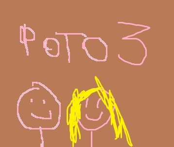
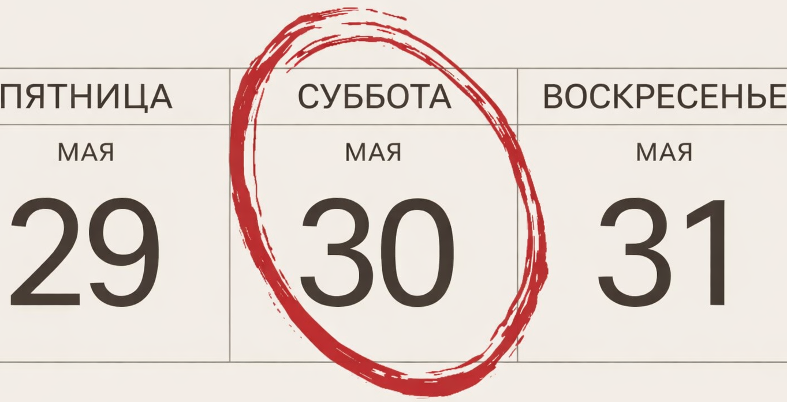

Марк
и Валерия
После церемонии - ужин, танцы и бадминтон на траве

После церемонии - ужин, танцы и бадминтон на траве

Трогательная церемония и последующий уютный вечер будут проходить в 17:00 в "Фермерском буфете" по адресу: территориальный отдел Снегири, муниципальный округ Истра, Московская область